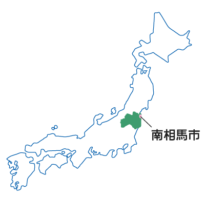
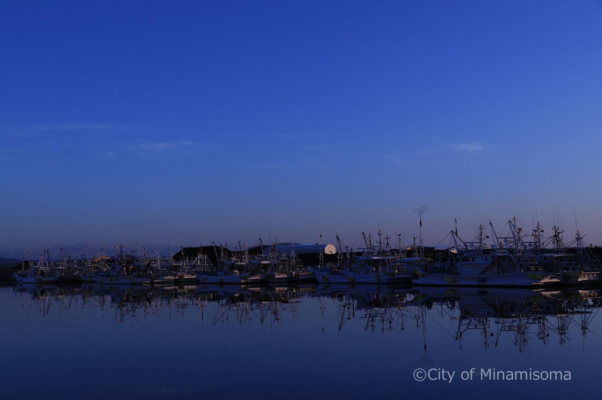
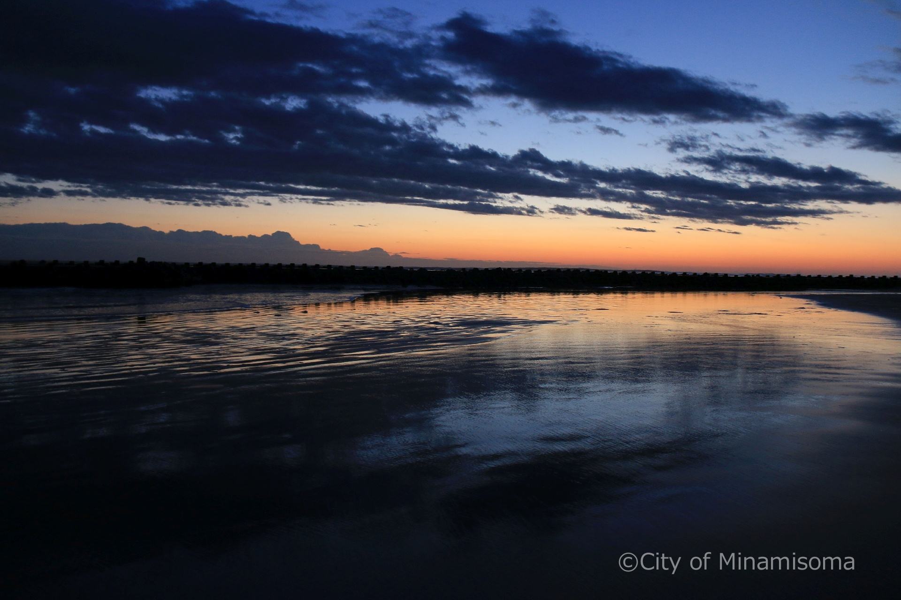
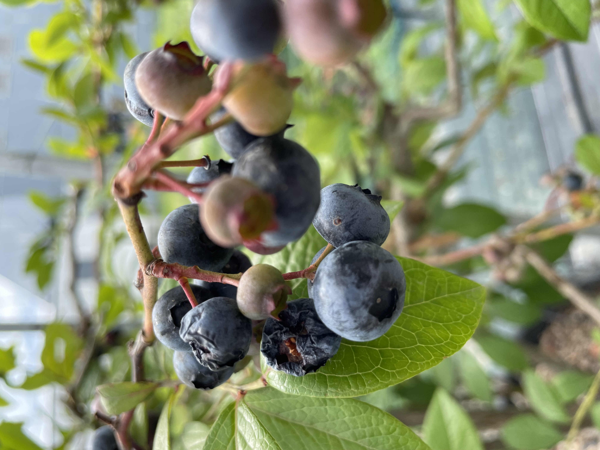
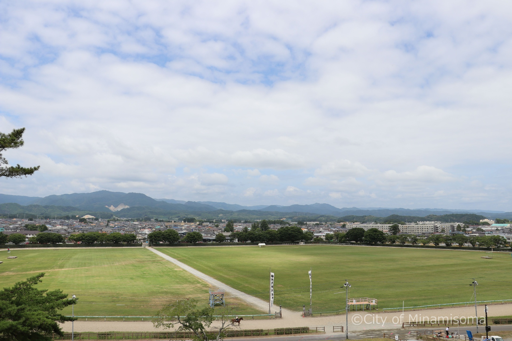
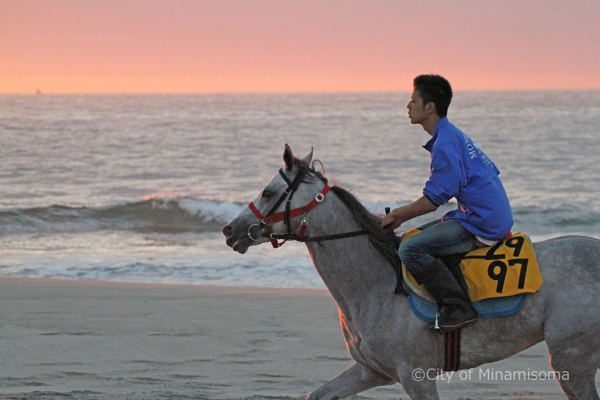
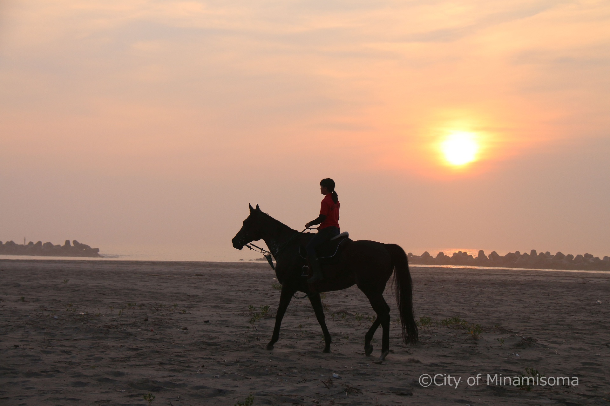
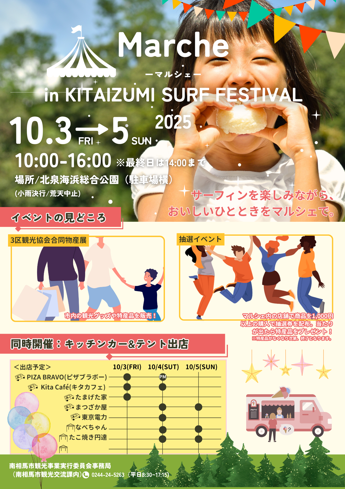

南相馬の海岸線は、ただ眺めるだけではなく、歩き、風を感じ、波音に包まれる体験そのものが魅力です。朝焼けに照らされる砂浜、昼間の太陽の煌めき、夕暮れの柔らかい光…季節や時間によって表情を変える波が、訪れる人の心をゆったりと解きほぐしてくれます。
みなみそうまを旅する。
歴史と伝統が息づくまち、南相馬市。
雄壮な相馬野馬追から、海や自然が広がる日常まで。
この土地ならではの魅力を発見しよう。



歴史と伝統が息づくまち、南相馬市。
雄壮な相馬野馬追から、海や自然が広がる日常まで。
この土地ならではの魅力を発見しよう。
太平洋に面した南相馬。寄せては返す波の音と海風が、旅人の心を癒します。
歴史に寄り添いながらも、新しい挑戦が息づくまち。変化と可能性に触れてみて。
相馬野馬追で受け継がれる馬事文化。馬と人の絆を体感する特別な時間を。

南相馬の海岸線は、ただ眺めるだけではなく、歩き、風を感じ、波音に包まれる体験そのものが魅力です。朝焼けに照らされる砂浜、昼間の太陽の煌めき、夕暮れの柔らかい光…季節や時間によって表情を変える波が、訪れる人の心をゆったりと解きほぐしてくれます。


南相馬は、古き良き文化とともに、新しい挑戦が日々生まれる街です。街を歩けば、若い世代が開いた新しいお店や、地域の課題に挑むプロジェクトが点在しています。歩くだけでワクワクする街、南相馬の「今」を感じてみてください。


南相馬は騎馬文化の街として知られ、甲冑姿の騎馬武者が躍動する「相馬野馬追」の舞台です。馬と触れ合うことで、日常では味わえない躍動感と癒やしを同時に感じることができます。


2025年10月3日(金)〜5日(日)
北泉海浜総合公園
サーフィン大会とマルシェの複合イベント！